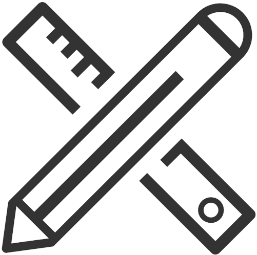

Hola!
Saya Ziedny Bisma Mubarok
Saya adalah pelajar dengan pengalaman belajar selama 13 tahun.
ingfo


Saya Pelajar di Polinema
Saya sekarang belajar di polinema, saya mengambil jurusan TI, di sini saya belajar ilmu komputer, mulai dari java, web, hingga AI, hal yang saya pelajari membuat saya siap dalam dunia kerja
Saya juga pernah mengikuti pelatihan desain grafis yang diajarkan kominfo pada 2022, bertajuk VSGA JGD
| Nama | : Ziedny |
| Usia | : 19 |
| Alamat | : Tumpang |
| Nomor | : 083167059442 |
| : mubarokziedny@gmail.com |
ini tets
My Skills
Coding |
Design |
Gaming
|